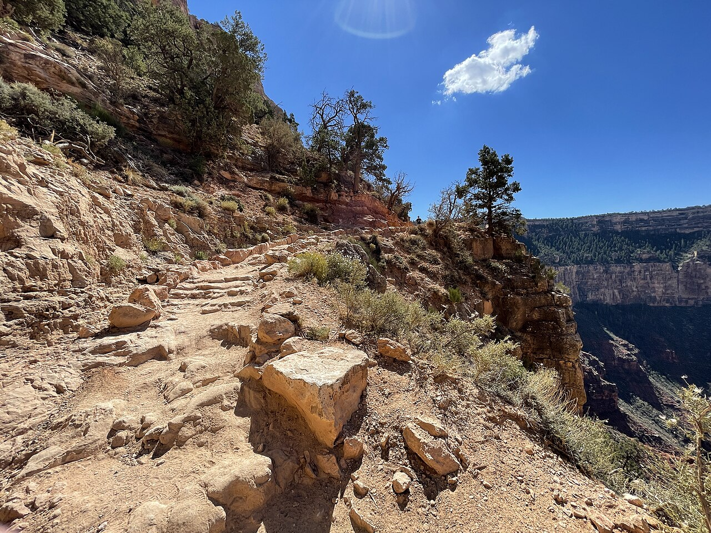

Flagstaff and the Grand Canyon South Rim · 5-day family itinerary
One night in Flagstaff, three in Tusayan just outside the South Entrance, the park’s free shuttles doing the driving on the rim, and one walk below the rim with the climb back timed before the first step down.

Photo: Vulturesong, The South Kaibab Trail to Ooh Aah Point, CC0 1.0, via Wikimedia Commons.

Checked before you commit
This illustrative route spends one night in Flagstaff and three in Tusayan, the gateway town just south of the park’s South Entrance, and lets the park’s free shuttle buses do the driving on the rim. Grand Canyon National Park’s pages on fees, shuttle buses, lodging, day hiking, the South Kaibab Trail, Hermit Road, Desert View Drive and visitor centres, Walnut Canyon National Monument’s trail and safety pages, Lowell Observatory’s visit page, Flagstaff Pulliam Airport’s airline and ground-transport pages, and the in-park lodging operator’s alert were checked against official pages on 20 October 2026. Nothing was booked.
Day 1 lands at Flagstaff Pulliam Airport and stays in Flagstaff for Lowell Observatory. Day 2 walks Walnut Canyon in the morning, then drives to the South Rim and sleeps in Tusayan. Days 3 and 4 park once at the Grand Canyon Visitor Center and ride the Hermit Road (Red) and Kaibab Rim (Orange) shuttles. Day 5 leaves east along Desert View Drive and returns to Flagstaff through the East Entrance and Cameron.
One anchor a day for a ten-year-old and a seven-year-old. Two walks go down first and come back up the same way: Walnut Canyon’s Island Trail and the South Kaibab Trail to Ooh Aah Point. Each gets a morning slot and a written turnaround, and the afternoon after it stays light. The whole route sits at roughly 2,100 to 2,200 metres (7,000 to 7,260 ft).
Flights, the hire car, the Tusayan hotel and Lowell Observatory tickets were not checked for your dates. Grand Canyon and Walnut Canyon entrance passes are card-only. A booking-hub link is intent only. It doesn’t hold a room or a car.
Planning boundary: dates are illustrative. The worked example runs Monday 4 to Friday 8 October 2027. On 20 October 2026, lodges inside the park had stopped overnight stays after a 29 August flash flood damaged the park’s water supply, the lodging operator had extended that closure through 19 November 2026, and water inside the canyon was turned off. The South Rim stayed open for day visits, and the park says hotels in Tusayan were not affected. Shuttle times quoted here are the park’s autumn 2026 timetable (northern-hemisphere autumn); 2027 times were not yet published. Alfred does not check trail closures, shuttle timetables or park fees while it writes the day. Book opens a partner checkout. It does not prove a booking exists.
Route and family-coordination brief
Party: two adults, one ten-year-old and one seven-year-old. Bases: one night in Flagstaff, three nights in Tusayan. Pace: moderate, one anchor a day. Budget input: Mid Range. Published fees appear only where an official page states them; nothing is totalled as a family quote.
Getting around: Flagstaff Pulliam Airport is served by American Airlines, with daily flights to Phoenix and Dallas/Fort Worth, and several car-hire companies have counters in the terminal. The airport advises booking ahead because counter hours vary. The park puts the South Entrance about 90 minutes’ drive from Flagstaff and 6 miles north of Tusayan. On the rim, park once at the Grand Canyon Visitor Center. The shuttles are free with your entrance pass, Hermit Road is closed to private vehicles from 1 March to 30 November, and there is no private parking at the South Kaibab Trailhead. The Tusayan (Purple) shuttle runs only in summer, so in October you drive in from Tusayan each morning.
Passes for visitors from outside the US: Grand Canyon takes cards only, and a private-vehicle pass is US$35 for seven days. Each non-US resident aged 16 and over also pays a US$100 nonresident fee unless admitted with an annual or America the Beautiful pass; children under 16 are exempt. The park’s own annual pass is for US citizens and residents, so for an Australian family the alternative is the US$250 Non-Resident Annual America the Beautiful Pass. On the published fees, two adults from Australia pay US$35 plus US$200 at Grand Canyon and US$25 for a vehicle at Walnut Canyon, or US$250 for the annual pass, which Walnut Canyon also accepts. Fees can change; check both pages before you go.
Day 1 — Land at Flagstaff Pulliam Airport and see Lowell Observatory
Fly into Flagstaff Pulliam Airport, which American Airlines connects with Phoenix and Dallas/Fort Worth. Collect the hire car at the terminal counters and check in to a Flagstaff hotel for one night.
In the evening, drive to Lowell Observatory on Mars Hill, about a mile west of downtown. It is open from noon to 10 pm every day except Tuesday, its telescopes usually open around sunset, and general admission needs no reservation (Premium Access does). It sits at 7,250 ft, about 2,210 metres, so pack layers for the children. Lowell says the average visit is about two hours. After a long flight with a seven-year-old, pick one telescope queue and leave on a high.
Fallback: Lowell is closed on Tuesdays, so it cannot slide to tomorrow. If the flight lands late, skip it; nothing later in the week depends on it.
Live-check: connection times through Phoenix or Dallas/Fort Worth; car-hire counter hours for your landing time; Lowell’s event calendar and sunset time for your date; cloud cover.
Day 2 — Walnut Canyon’s stairs in the morning, then Mather Point at sunset
Start at Walnut Canyon National Monument near Flagstaff. The Island Trail is a paved 1-mile round trip of about an hour past 25 cliff-dwelling rooms. The park rates it strenuous, especially for anyone not used to 7,000 ft: it descends 185 vertical feet into the canyon and returns the same way. Park pages give three different stair counts (240, 273 and 736), so plan around the climb back up rather than the number. If the seven-year-old is flagging at the top, the Rim Trail is an easy, fairly flat 0.7-mile round trip with two overlooks. Entry to the Island Trail closes at 4 pm and the monument at 5 pm. A private-vehicle pass is US$25, card only.
After lunch, drive to Tusayan and check in. Enter the park after 2 pm, which the park suggests for shorter entrance queues in busy periods, buy or show your pass at the South Entrance, and park at the Grand Canyon Visitor Center. Pick up Junior Ranger books at the Grand Canyon Conservancy Park Store across the plaza (open 8 am to 6 pm in autumn 2026); badges are only given in the park. Walk to nearby Mather Point for sunset, then drive back to Tusayan.
Fallback: if the Island Trail is closed for weather, walk the Rim Trail only. If Walnut Canyon runs long, go straight to Mather Point and collect the Junior Ranger books tomorrow morning.
Live-check: Walnut Canyon’s alerts and opening time; the park’s What’s Open Today list (the Visitor Center kept 9 am to 4 pm in autumn 2026); sunset time.
Day 3 — Hermit Road by shuttle, with Hopi Point at sunset
Drive in before 10 am, park at the Visitor Center and ride the Village (Blue) Route to the Hermit Road Transfer Station. From there the Hermits Rest (Red) Route runs 7 miles out to Hermits Rest with stops at nine overlooks; the full loop takes about 80 minutes without getting off. In the autumn 2026 timetable, buses ran every 12 minutes from 8 am to sunset, with a last sweep an hour after sunset. Coming back, buses stop only at Hermits Rest, Pima, Mohave and Powell Points, so do your walking on the way out. A good family stretch of the Rim Trail is Trailview Overlook to Maricopa Point, 0.7 mile on a paved path; Powell Point to Hopi Point is 0.3 mile on dirt. End the day at Hopi Point, which the park names as one of its most popular sunset viewpoints and which has restrooms.
Carry water and snacks for the whole day. There is no water on the Rim Trail west of Bright Angel Lodge, the park is asking visitors to bring their own drinking water while water restrictions last, and food and open drinks are not allowed on the buses. Prams and strollers must be folded to board.
Fallback: the park suspends shuttle service in bad weather. If storms roll in, stay near the Visitor Center on the paved Rim Trail and move Hopi Point to tomorrow evening.
Live-check: the 2027 shuttle timetable; sunset time; current water restrictions and food service hours on the rim.
Day 4 — South Kaibab to Ooh Aah Point, with the climb out timed
Take an early Kaibab Rim (Orange) Route bus east from the Visitor Center to the South Kaibab Trailhead, a 9-minute ride; in autumn 2026 the first bus left at 6 am. Ooh Aah Point is 0.9 mile down, 1.8 miles round trip, and the park estimates 1 to 2 hours. The park’s trail sheet warns that the steepness is misleading on the way down, says to plan on taking twice as long to hike up as it took to hike down, and asks groups to let the weakest hiker set the pace. Write a turnaround time on the card before you start, and turn at Ooh Aah Point or at that time, whichever comes first. If the walk down takes 30 minutes, plan an hour for the climb.
There is no water on the trail, so every person carries their own. If mules pass, step off on the uphill side, stay quiet and still, and wait until the last mule is 50 feet past. Afterwards, keep the afternoon free for lunch and a rest in Tusayan.
Fallback: if anyone is tired or the morning is warm, skip the descent and walk the flat, paved Rim Trail west from the trailhead to Pipe Creek Vista, 0.9 mile, where a bus stop takes you back to the Visitor Center.
Live-check: trail status (on 14 September 2026 the park listed the South Kaibab Trail open from the trailhead to the Tip-Off, with the trail below and the river bridges closed after the August flood); the weather; the drop to Ooh Aah Point, which park pages give as 600 ft and 790 ft, so plan to the larger figure.
Day 5 — Desert View Drive east, then back to Flagstaff
Check out and drive Desert View Drive, the one scenic road on the South Rim open to private cars: 23 miles (37 km) east from Grand Canyon Village to Desert View, with parking at every viewpoint. Stop at Grandview Point and at Moran Point, where three main rock groups are visible, and at the Tusayan Pueblo site 3 miles west of Desert View if it is open (its 2026 season ran to 31 October, 8 am to 4 pm, when staffing allowed). Lipan Point was closed from 22 June to 23 December 2026 for repairs. From Desert View, leave through the East Entrance towards Cameron and take Highway 89 back to Flagstaff; the park puts Flagstaff about 75 miles from Desert View. Return the car and fly out.
Fallback: if the flight leaves early in the afternoon, skip Desert View Drive and drive back the way you came, about 90 minutes from the South Entrance to Flagstaff.
Live-check: Desert View services and Watchtower hours on What’s Open Today; the Tusayan Pueblo season for 2027; Lipan Point status; your airline’s check-in cut-off and the car-return time.
Planning notes
Dates are illustrative. At decision time, recheck Grand Canyon National Park’s lodging notice, What’s Open Today list, trail status, shuttle timetable and entrance fees, Walnut Canyon’s alerts, Lowell Observatory’s hours, and your flight and car-hire times. A travelling profile is required, and the adults, children and ages Alfred plans for come from the travellers on that profile. On web Lets Go, Holiday takes origin, destination, dates, a budget step and a day pace, then Plan my trip queues the itinerary. Moderate day pace fills a morning and an afternoon slot, with lunch and dinner, so delete the afternoon activity on Day 4 if Alfred adds one. The Estimated costs bar, when it appears, is a rounded median of flight-and-hotel packages, not a quote. While the trip is still Planning, you can keep or change the hotel and then the flights Alfred picked. Holiday takes one destination, so it plans one base; Multi-city can hold Flagstaff and the canyon stop if both are picked from city search. Once the trip is ACTIVE, it can be viewed, edited and shared. You can edit an item’s title, times and notes, so “Ooh Aah Point — down by 8.00, turn by 8.45 at the latest, water for four” can sit on the card itself. Book opens a partner checkout for flights and hotels, activities, eSIMs and travel insurance. It doesn’t check trail closures, shuttle times or park fees.
Plan a trip
Start with your people, dates and pace, then review the editable plan before booking.
Plan a trip